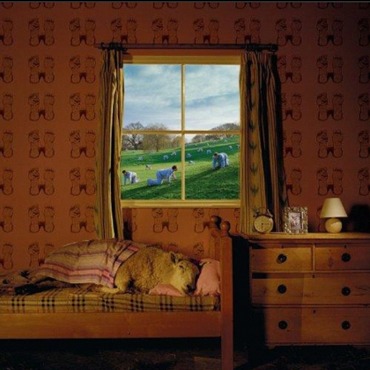
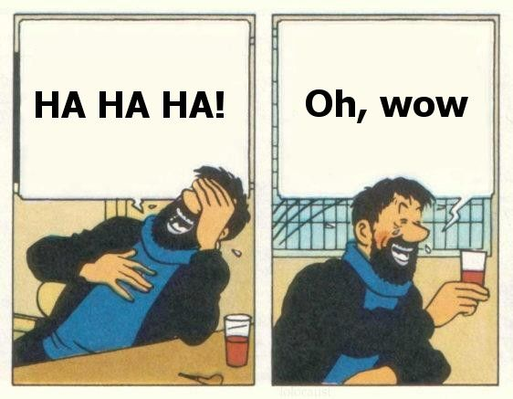

typescript
The Good,
The Bad,
&
The Type Safe
Me
Aaron Powell
Readify, Senior Dev, Technical Specialist (Web)
JavaScript nerd
International man of mistery
For those who don't know
TypeScript is a language for application-scale JavaScript development. TypeScript is a typed superset of JavaScript that compiles to plain JavaScript. Any browser. Any host. Any OS. Open Source.

Let's try this again
JavaScript for C# developers, because untyped languages are scary and J# isn't doing so well
- Me, just now
Superset

Not quite...
jQuery click handler
$(document).on('click', 'a', function (e) {
e.preventDefault();
window.open(this.href);
});var add = function(x: number, y: number): number {
return x + y;
};
var sum = add(1, 2);
console.log(sum); //3
add('a', 'b'); //TypeScript compiler errorSafety in Numbers

AnD other types
Type annotations
- You can specify argument types
- You can specify return types
- Types can be determined from usage
Object structure
I have an object
...
I want specify that that's what the function takes
interface Person {
firstName: string;
lastName: string;
dob: Date;
}
var canDrink = function(person: Person): Boolean {
return person.dob.getFullYear() < new Date().getFullYear() - 19;
};
var person = {
firstName: 'Aaron',
lastName: 'Powell',
dob: new Date(27, 04, 1984)
};
if (canDrink(person)) {
console.log(person.firstName + ' grab yourself a beer!');
} else {
console.log(person.firstName + ' baby needs his bottle');
}Classes
Yet another class implementation!
Woo!
class Person {
constructor(public firstName: string, public lastName: string){
}
greet() {
console.log('Hello, my name is ' + this.firstName + ' ' + this.lastName);
}
marry(partner: Person) {
console.log('Let\'s celebrate the marriage of ' + this.firstName + ' and ' + partner.firstName);
}
}
class Parent extends Person {
constructor(public firstName: string, public lastName: string, public children: Person[]) {
super(firstName, lastName)
}
}
var dad = new Parent('Ian', 'Powell', [new Person('Aaron', 'Powell')]);
dad.greet();
Class design
The trinity of constructor functions, prototypes, and instances are more than adequate for solving the problems that classes solve ... The intent ... is not to change those semantics. Instead, it’s to provide a terse and declarative surface for those semantics...
ECMAScript 6 class proposal
Promoting good design
Modules
module Collections {
export class LinkedList{
root: any;
constructor() {
this.root = null;
}
add(item: any) {
//add item
}
print() {
//print items
}
}
}
var list = new Collections.LinkedList();
list.add(1);Other goodies
Rest Parameters
var sum = function (...numbers: number[]) {
return numbers.reduce(function (x, y) {
return x + y;
});
}
console.log(sum(1, 2, 3, 4, 5));
Fat Arrow
class DoStuff {
what: string;
stuff() {
$.ajax({
type: 'get',
url: '/foo',
success: data => {
this.what = data;
}
})
}
}
Enums
enum Languages {
JavaScript = 0,
TypeScript = 1,
CoffeeScript = 2,
Sweetjs = 3,
Dart = 666
}

Visual Studio
- Plugin
- Built on top of the JavaScript editor
- Doesn't need a
.projfile - Provided template uses
.csprojwith a post-build event - Web Essentials 2012 supports it
Visual Studio
- Intellisense
- Rename refactoring
- Go to definition
Definition Files
foo.d.ts
Type information without the logic
Many node.js modules done
jQuery done
Node.js
npm install -g typescript
tsc modules.tsOther editors
- Sublime Text 2, EMACS, Vi
- Syntax highlighting
Debugging
tsc -sourcemap foo.tsSoooo......
CoffeeScript
Apples and Oranges
CoffeeScript hides JavaScript behind a new syntax
TypeScript extends the existing syntax
CoffeeScript doesn't attempt type safety
Dart

Final thoughts
I hope it stays ES6 compliant
I'm more inclined over CoffeeScript
Debugging needs buy-in from either VS or IE team
Seems to have provided some real benefits already